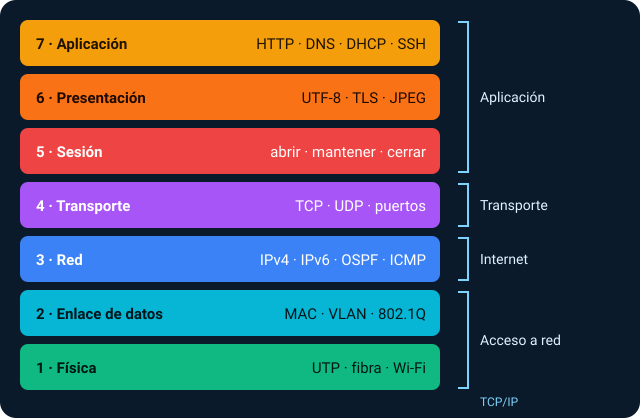

Integrantes


El curso en una imagen
Durante el semestre recorrimos las siete capas del modelo OSI: desde el cableado y las señales de la capa física hasta los servicios que usa la gente en la capa de aplicación. La mayor parte del trabajo estuvo en la capa de red, con direccionamiento IPv4, subnetting, VLSM y enrutamiento con OSPF.
A la derecha de cada capa aparece su equivalente en TCP/IP, el modelo de cuatro capas que usa internet en la práctica.

Qué pasa cuando abres este sitio
Este sitio es solo HTML (más una hoja de estilos por página) servido por Nginx dentro de un contenedor Docker. Al escribir http://localhost:8001 en el navegador ocurre esto:
- Capa 7: el navegador arma una petición
GET /index.htmlde HTTP. - Capa 4: se abre una conexión TCP con el saludo de 3 vías hacia el puerto 8001 del equipo.
- Docker redirige ese puerto al puerto 80 del contenedor, donde escucha Nginx.
- Nginx responde
200 OKcon el archivo y el encabezadoContent-Type: text/html. - Capa 6: el navegador interpreta el texto como UTF-8 (lo declara
<meta charset="utf-8">) y pide las imágenes y estilos con nuevas peticiones HTTP.
Las instrucciones para levantar el contenedor están en el archivo README.md del repositorio.